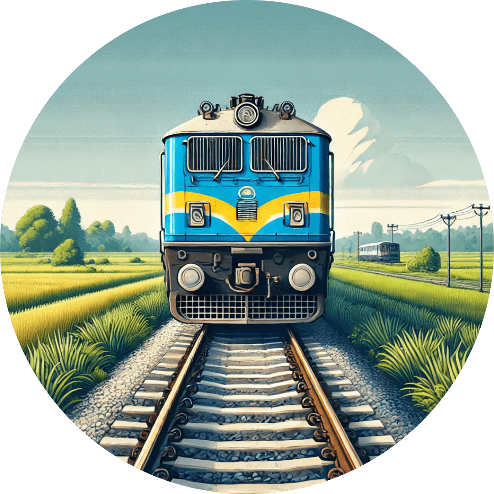

Train Ticket Planner - Calculate Your IRCTC Booking Dates
Plan your journey with ease. Use our tool to calculate Indian Railways advance booking dates and get accurate reservation details.

Frequently Asked Questions
What is the advance booking period for Indian Railways tickets?
The advance reservation period for Indian Railways is 60 days. Passengers can book tickets up to 60 days before the journey date.
When does IRCTC open train ticket bookings?
Train ticket bookings are available daily from 1:30 AM to 11:30 PM. The system is closed for maintenance between 11:30 PM and 1:30 AM.
Can I book tickets for all trains 60 days in advance?
Most trains allow booking 60 days in advance. However, some special trains may have different rules. Always check the specific train's schedule on IRCTC.